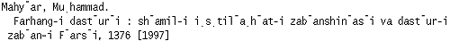

Persian NACO Manual
Choice of Entry for Modern Authors
There are various name-comprising elements in Persian title pages. The first or the
last element in the t.p. is not always the true surname for Persian
authors. [See AACR2: Names in the Arabic alphabet, 22.22 and 22.22B]
In establishing Persian multi-element surnames we need to
determine which element or combination of elements qualify as the appropriate surname.
If the surname is a multi-element surname (names with affixes) or a
compound name (names with word components) enter the name heading as
follows:
- Surname with affixes: name elements must be kept intact in the main
heading entry.
|
Example: | Hushang Nur Niya (as on t.p.)
Main heading entry: Nurniya, Hushang (not Nur Niya, Hushang) | |
Example: | Farrukh Jafar Pur (as on t.p.)
Main heading entry: Jafarpur, Farrukh (not Jafar Pur, Farrukh) |
- Compound surnames: must be kept intact with one space between the
various elements of the name.
|
Examples: | Ahmad Darya Bandari (as on t.p.); Hasan Qarakhani Bahar (as on t.p. of another book)
Main heading entry: Darya Bandari, Ahmad (not Bandari, Ahmad Darya)
Main heading entry: Qarakhani Bahar, Hasan (not Bahar, Hasan
Qarakhani) |
In the Persian language, affixes are not true surnames and should not
be considered as independent name headings. However, exceptions exist
in the NAF. The following listing includes some examples of Persian
affixes:
abadi
an
anah
asa
ban
dan
dard
dil*
dis
dust
far
|
fard
gah
gar
ju
kadah
khanah
khvush
kiya
lakh
na
nadan
|
niya
nizhad
par
parast
pur
rad
sanj
sar
sar
sara
sir
|
sitan
talab
tar
vand
var
varah
vard
Yar
zadah, zad
zand
zar |
| *Treat as an affix. |
List taken from:

|